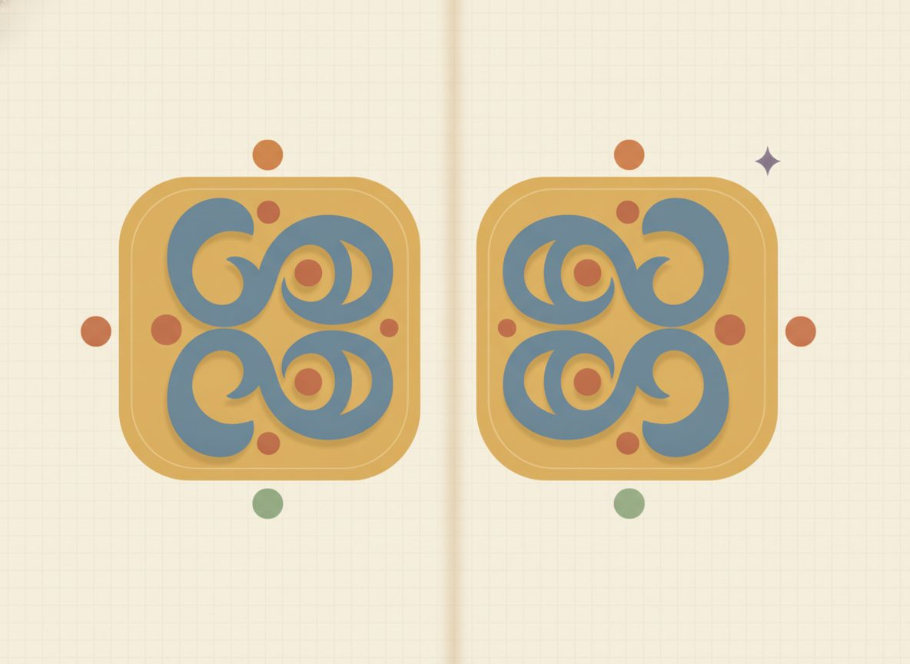

Special patterns
Two kinds of factoring show up so often that it pays to recognize them on sight, without running the full two-number search each time. The first is a difference of squares, like x²−9. The second is a perfect-square trinomial, like x²+6x+9. Learning to spot them saves you the whole two-number search.
Start with the difference of squares, and build it rather than just state it. Multiply (a+b)(a−b) with the area box from Unit 10:
$$\begin{array}{c|c|c} & a & -b \\ \hline a & a^2 & -ab \\ \hline b & ab & -b^2 \end{array}\qquad\Rightarrow\qquad a^2 - ab + ab - b^2 = a^2-b^2$$
Look at the two middle cells: +ab and −ab. They add to zero, so the middle term goes to zero and disappears, leaving just a²−b². Run that backward and you have your factoring rule.

How do you recognize one? Two perfect squares with a minus between them. Then a is the square root of the first, b is the square root of the last, and it splits into (a+b)(a−b):
$$x^2-9=(x)^2-(3)^2=(x+3)(x-3)$$
Now the warning. A sum of squares, x²+9, with a plus, does not factor over the integers. Difference of squares needs the minus. You can see why with the unit's own multiply-back move: tempted to write (x+3)(x−3) for x²+9? Multiply it back and you get x²−9, a minus, so that product factors x²−9, never x²+9. The two-number search says the same thing: you'd need two numbers multiplying to +9 and adding to 0, and no integer pair does that. So x²+9 is prime.
Now the perfect-square trinomial. These are what you get when you square a binomial: (x+3)² works out to x²+6x+9. How do you recognize one? The first and last terms are both perfect squares, and the middle term equals 2 times the two square roots multiplied.
Check x²+6x+9: the square root of x² is x, the square root of 9 is 3, and 2·x·3 = 6x, which matches the middle, so it's (x+3)². The sign in the middle becomes the sign inside the parentheses: x²−10x+25 is (x−5)².
These two patterns are really just special cases of Lesson 11.2. For a perfect square the two numbers are equal, and for a difference of squares they're opposites. So the multiply-back check is the same one you already know, and it's just as mandatory here.
New words
- 11.3.d1 Perfect square: a quantity that is something squared. 9=3², x²=(x)², 4x²=(2x)² are perfect squares; 7 and x are not.
- 11.3.d2 Difference of squares: one perfect square minus another, a²-b².
- 11.3.d3 Perfect-square trinomial: a trinomial that is exactly (a±b)² multiplied out.
In each example below, the recognition step comes first: confirm the pattern against the rule before writing the factors.
Worked example
(each checked by multiplying back):
Difference of squares, basic: 11.3.w1 $$x^2-9=(x+3)(x-3) \qquad \text{Check: } x^2-3x+3x-9 = x^2-9$$
Difference of squares, larger: 11.3.w2 $$x^2-25=(x+5)(x-5) \qquad \text{Check: } x^2-5x+5x-25 = x^2-25$$
Difference of squares with a coefficient (4x²=(2x)²): 11.3.w3 $$4x^2-1=(2x+1)(2x-1) \qquad \text{Check: } 4x^2-2x+2x-1 = 4x^2-1$$
Perfect-square trinomial (plus): 11.3.w4 $$x^2+6x+9=(x+3)^2 \qquad \text{Check: } (x+3)(x+3)=x^2+3x+3x+9 = x^2+6x+9$$ (√(x²)=x, √9=3, 2·x·3=6x.)
Perfect-square trinomial (minus): 11.3.w5 $$x^2-10x+25=(x-5)^2 \qquad \text{Check: } (x-5)(x-5)=x^2-5x-5x+25 = x^2-10x+25$$ (√(x²)=x, √25=5, 2·x·5=10x; the minus makes it (x−5)².)
Four slips to watch for once the patterns are working for you.
The first is trying to factor a sum of squares, writing x²+9 as (x+3)(x−3); multiply your answer back and you'll see it gives x²−9, with a minus, so it's the wrong starting point. A sum of squares is prime over the integers.
The second is mistaking a near-miss for a perfect square: x²+5x+9 has square ends, but 2·x·3 = 6x, not 5x, so it is not (x+3)². When the middle doesn't equal twice the roots multiplied, fall back to the 11.2 search, and here that search comes up empty (pairs of 9: 1+9=10, 3+3=6, neither is 5), so x²+5x+9 is prime.
The third is dropping a coefficient's square root, writing 4x²−1 as (4x+1)(4x−1); the square root of 4x² is 2x, not 4x, and multiplying back shows it.
And the last is ignoring the middle sign in a perfect square, calling x²−10x+25 an (x+5)²; the middle sign carries inside, so it's (x−5)².
Putting it together: GCF first, then the pattern
Here's where "always try the GCF first" pays off most. Pulling a common factor can turn a messy expression into a clean pattern that wasn't visible before, and forgetting to keep that GCF in your final answer is the classic "not fully factored" slip. Two worked-through examples, each done end to end.
GCF, then a perfect square: 11.3.w6 $$2x^2+12x+18 \;=\; 2(x^2+6x+9) \;=\; 2(x+3)^2 \qquad \text{Check: } 2(x^2+6x+9)=2x^2+12x+18$$ Pull the 2, since every coefficient is even. The inside, x²+6x+9, is now a perfect square (√(x²)=x, √9=3, 2·x·3=6x). The 2 stays out front: 2(x+3)² is fully factored, and (x+3)² alone would be missing the 2.
GCF, then a difference of squares: 11.3.w7 $$3x^2-12 \;=\; 3(x^2-4) \;=\; 3(x+2)(x-2) \qquad \text{Check: } 3(x+2)(x-2)=3(x^2-4)=3x^2-12$$ Pulling out 3 exposes x²−4, a difference of squares. Neither step was visible before the GCF came out, which is exactly why the GCF goes first.
So how do you know you're done? A factorization is finished only when no piece can be factored again. After each split, look at every factor and ask: can this one be factored? Is there a leftover difference of squares, a trinomial that still factors, a GCF you missed? Stop only when each piece is a single term, a prime trinomial, or a binomial that can't be broken down further.
Check yourself
- 11.3.c1 Is x²−16 a difference of squares? Factor it, then multiply back to prove it. (Yes: x² and 16 are both perfect squares with a minus between them, so it's (x+4)(x−4); multiplying back gives x²−4x+4x−16 = x²−16.)
- 11.3.c2 Can x²+16 be factored the same way? Why or why not? (No: that's a sum of squares, which is prime over the integers. (x+4)(x−4) would multiply back to x²−16, a minus, so it can't be the factoring of x²+16.)
- 11.3.c3 How do you tell x²+6x+9 (a perfect square) from x²+6x+8 (not one)? Factor each. (Check the middle against twice the roots: for x²+6x+9, 2·x·3 = 6x matches, so it's (x+3)². For x²+6x+8, the ends aren't a matching square pair, so run the two-number search: 2 and 4 multiply to 8 and add to 6, giving (x+2)(x+4).)
You can now spot a difference of squares and a perfect-square trinomial on sight, factor each one, recognize that a sum of squares is prime, and factor completely by pulling the GCF first and checking every remaining piece.
The order of attack worth carrying out of this unit, into Unit 12 and beyond: always pull the GCF first, then count the terms. Two terms means look for a difference of squares (and remember a sum of squares is prime). Three terms means glance for a perfect square and otherwise run the two-number search (and if no integer pair works, it's prime). Then factor completely, checking every piece, and multiply back every time.
The thread tying it all together is that factoring is multiplying backward, so Unit 10 is your answer key, which is what makes the check feel natural instead of like extra work. And you've already done the hard part for next unit: once x²+5x+6 is (x+2)(x+3), reading off the answers to a quadratic is one short step away.
Difference of squares:
Reveal answerHide to problem 1
(x+3)(x-3)Reveal answerHide to problem 2
(x+4)(x-4)Reveal answerHide to problem 3
(x+5)(x-5)Reveal answerHide to problem 4
(x+7)(x-7)Reveal answerHide to problem 5
(x+1)(x-1)Reveal answerHide to problem 6
(2x+3)(2x-3)Reveal answerHide to problem 7
(3x+1)(3x-1)Perfect-square trinomials:
Reveal answerHide to problem 8
(x+3)²Reveal answerHide to problem 9
(x-5)²Reveal answerHide to problem 10
(x+4)²Reveal answerHide to problem 11
(x-2)²Reveal answerHide to problem 12
(x+1)²GCF first, then factor completely (each needs a common factor pulled before the pattern shows):
Reveal answerHide to problem 13
2(x+3)²Reveal answerHide to problem 14
3(x+2)(x-2)Reveal answerHide to problem 15
2(x+2)(x+3)Spot-checks: #6: (2x+3)(2x-3)=4x²-9. #10: 2·x·4=8x, so (x+4)². #11: middle -4x=2·x·(-2), so (x-2)². #13: 2(x+3)²=2(x²+6x+9)=2x²+12x+18 (keep the 2!). #14: 3(x²-4)=3x²-12.